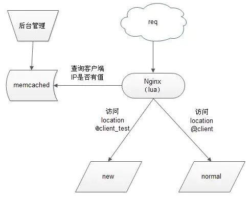

nginx+lua+memcache 实现灰度发布
1.什么是灰度发布
让一部分用户继续用A系统，一部分用户开始用B系统。如果用户对B系统没有意见，那么逐步扩大范围。把所有用户迁移到B系统。在初始灰度发布的时候就可以发现，调整问题，以保证其影响度
可以通过以下图片了解发布发布流程

从上图可以看到：
- 当用户请求达到前端代理服务器nginx,内嵌的lua模块解析nginx 配置文件中的lua 脚本代码
- lua 变量获得客户端IP，去查询memacached 缓存内是否有该键值，如果有返回执行new 服务，否则则执行normal
2.安装配置过程
安装依赖包
yum -y install gcc gcc-c++ autoconf libjpeg libjpeg-devel libpng libpng-devel freetype freetype-devel libxml2 libxml2-devel zlib zlib-devel glibc glibc-devel glib2 glib2-devel bzip2 bzip2-devel ncurses ncurses-devel curl curl-devel e2fsprogs e2fsprogs-devel krb5 krb5-devel libidn libidn-devel openssl openssl-devel openldap openldap-devel nss_ldap openldap-clients openldap-servers make pcre-devel\
yum -y install gd gd2 gd-devel gd2-devel lua lua-devel
yum –y install memcached
下载lua 模块，lua-memcache操作库文件和nginx包
wget https://github.com/simpl/ngx_devel_kit/archive/v0.2.18.tar.gz
wget https://github.com/chaoslawful/lua-nginx-module/archive/v0.8.5.tar.gz
wget https://github.com/agentzh/lua-resty-memcached/archive/v0.11.tar.gz
wget http://nginx.org/download/nginx-1.4.2.tar.gz
#解压编译安装
tar xvf nginx-1.4.2.tar.gz
cd nginx-1.4.2/
./configure \
--prefix=/soft/nginx/ \
--with-http_gzip_static_module \
--add-module=/root/ngx_devel_kit-0.2.18/ \
--add-module=/root/lua-nginx-module-0.8.5/
make&&make install
拷贝lua的memcached操作库文件
tar xvf v0.11.tar.gz
cp -r lua-resty-memcached-0.11/lib/resty/ /usr/lib64/lua/5.1/
配置nginx
vim /soft/nginx/conf/nginx.conf
worker_processes 1;
events {
worker_connections 1024;
}
http {
include mime.types;
default_type application/octet-stream;
sendfile on;
keepalive_timeout 65;
proxy_next_upstream error timeout;
proxy_redirect off;
proxy_set_header Host $host;
proxy_set_header X-Real-IP $http_x_forwarded_for;
proxy_set_header X-Forwarded-For $proxy_add_x_forwarded_for;
client_max_body_size 100m;
client_body_buffer_size 256k;
proxy_connect_timeout 180;
proxy_send_timeout 180;
proxy_read_timeout 180;
proxy_buffer_size 8k;
proxy_buffers 8 64k;
proxy_busy_buffers_size 128k;
proxy_temp_file_write_size 128k;
upstream client {
server 192.168.1.2:80;
}
upstream client_test {
server 192.168.1.2:81;
}
server {
listen 80;
server_name localhost;
location / {
content_by_lua '
clientIP = ngx.req.get_headers()["X-Real-IP"]
if clientIP == nil then
clientIP = ngx.req.get_headers()["x_forwarded_for"]
end
if clientIP == nil then
clientIP = ngx.var.remote_addr
end
local memcached = require "resty.memcached"
local memc, err = memcached:new()
if not memc then
ngx.say("failed to instantiate memc: ", err)
return
end
local ok, err = memc:connect("127.0.0.1", 11211)
if not ok then
ngx.say("failed to connect: ", err)
return
end
local res, flags, err = memc:get(clientIP)
if err then
ngx.say("failed to get clientIP ", err)
return
end
if res == "1" then
ngx.exec("@client_test")
return
end
ngx.exec("@client")
';
}
location @client{
proxy_pass http://client;
}
location @client_test{
proxy_pass http://client_test;
}
location /hello {
default_type 'text/plain';
content_by_lua 'ngx.say("hello, lua")';
}
location = /50x.html {
root html;
}
}
}
检测配置文件
#/soft/nginx/sbin/nginx -t
nginx: the configuration file /soft/nginx/conf/nginx.conf syntax is ok
nginx: configuration file /soft/nginx/conf/nginx.conf test is successful
启动nginx
/soft/nginx/sbin/nginx
启动memcached 服务
memcached -u nobody -m 1024 -c 2048 -p 11211 –d
测试验证
测试lua 模块是否运行正常
- 访问http://192.168.1.1/hello 如果显示hello,lua 表示安装成功
- 在这里另一台测试机 192.168.1.12 一个用80端口执行正常代码，一个用81执行灰度发布代码
- 在memcached中以你的客户机地址为key，value值为1 标识设置为灰度发布
ps：如果设置为1访问到81则访问灰度代码如果设置为0则访问正常代码。
上文使用memcached 也可以使用redis下面是redis使用教程
nignx http块中添加
//外部配置
include lua.conf;
//新系统地址
upstream new{
server 192.168.1.2:80;
}
//老系统地址
upstream old{
server 192.168.1.2:81;
}
lua.conf nginx的server配置
server {
listen 80;
server_name _;
location /lua {
//redis lua 脚本
content_by_lua_file conf/redistest.lua;
default_type 'text/html';
}
//代理到新服务
location @new{
proxy_pass http://new;
}
//代理到原来服务
location @old{
proxy_pass http://old;
}
}
主要编写lua脚本
//引入redis模块，只能联单机
local redis = require "resty.redis"
local cache = redis.new()
cache:set_timeout(60000)
//链接
local ok, err = cache.connect(cache, '192.168.19.10', 6379)
//这里如果链接redis失败，则转发到@old对应的服务器（传统服务）
if not ok then
ngx.exec("@old")
return
end
//如果nginx只有一层分发层，这下面这四行代码可以不写
local local_ip = ngx.req.get_headers()["X-Real-IP"]
if local_ip == nil then
local_ip = ngx.req.get_headers()["x_forwarded_for"]
end
//从remote_addr变量中拿到客户端ip，同样nginx只有一层的时候此变量为客户端ip，多层不是
if local_ip == nil then
local_ip = ngx.var.remote_addr
end
//在redis中根据客户端ip获取是否存在值；redis中存放的是key:ip val:ip,存放的ip访问微服务
local intercept = cache:get(local_ip)
//如果存在则转发到@new对应的服务器（微服务）
if intercept == local_ip then
ngx.exec("@new")
return
end
//如果不存在，则转发到@old对应的服务器（传统服务）
ngx.exec("@old")
//关闭客户端
local ok, err = cache:close()
if not ok then
ngx.say("failed to close:", err)
return
end
1：redis集群要配置多ip，防止宕机问题 2：链接问题，如果有线程池最好了